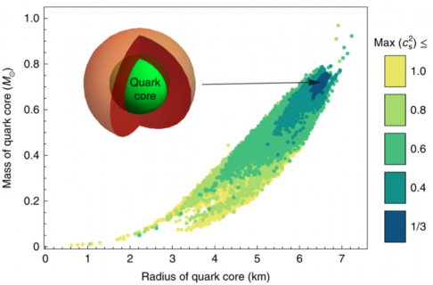

¿QUE SON LOS AGUJEROS NEGROS? ¿EXISTEN? ¿COMO NACEN?
en este blog ablaremos de ciencia y astronomia ejmplos de los que ablaremos a futuro sera (fondo cosmico de microondas,estrella de neutrones,escala de civilisaciones ECT.)

¿Que es un agujero negro?
Un agujero negro es una región finita del espacio descrita en las ecuaciones de Einstein, cuyo interior posee una concentración de masa lo suficientemente elevada como para generar un campo gravitatorio tal que ninguna partícula ni radiación —ni siquiera la luz— pueden escapar de él.Los agujeros negros son los restos fríos de antiguas estrellas, tan densas que ninguna partícula material, ni siquiera la luz, es capaz de escapar a su poderosa fuerza gravitatoria. Mientras muchas estrellas acaban convertidas en enanas blancas o estrellas de neutrones, los agujeros negros representan la última fase en la evolución de enormes estrellas que fueron al menos de 10 a 15 veces más grandes que nuestro sol.¿Los agujeros negros pueden emitir radiacion? ¿si,no? !lo veremos¡ Los agujeros negros pueden ser capaces de emitir un tipo de radiación, la radiación de Hawking, conjeturada por Stephen Hawking en la década de 19701. La radiación emitida por agujeros negros como Cygnus X-1 no procede del propio agujero negro sino de su disco de acreción. la verdad que esa radiacion losb ase perder masa pero para que esa radiacion lo consuma se necesitarian 10100 para evaporarse por completo. por ahora estodo lo que puedo dar sobre los agujeros negros claro mas adelante agregare mas informacion sobre estos increibles objetos estelares.
Ahorita veremos la primera foto de un agujero negro real tomanda por el telescopio event horizon telescope(EHT)

ESTRELLAS DE NEUTRONES ¿COMO NACEN? ¿QUE SON?
bueno la verdad que el espacio ay objetos que son super impresionantes,Las estrella de neutrones se caracteriazan por ser el segundo objeto mas denso del universo despues de los agujeros negros.

¿COMO NACEN ESOS OBJETOS MONSTROSOS?
Bueno una estrella de neutrones nace atraves de el colapso gravitacional de una estrella supergigante masiva despues de agotar su combustible en su nucleo y explotar como supernova.Estas estrellas estan compuestas principalmente de neutrones como su nombre lo indica.Una estrella de neutrones tipica tiene una masa de entre 1,35 a 2,1 masas solares con un radio correspondiente aprroximado de 12km.En comparacion,el radio del sol es eunas 60,000 veces esa cifra.Ademas,las estrellas de neutrones tiene campos magneticos y pueden girar a velocidades extremadamentes altas (casi a la velocidad de la luz) algunas estrellas de neutrones giran rapídamente y emite rayos de radiacion electromacnetica,que debido a la inclinacion del eje de rotacion respecto al magnetíco estos rayos se pueden ver como pulsares.
DATOS CURIOSOS DE LAS ESTRELLAS DE NEUTRONES
Sabias que las estrellas de neutrones en su interior puende almacenar pequeñas gotas de materia extraña que cuando las estrellas de neutros colisionan con otra pueden librerar estas gotas de materia extraña y puede infertar a planetas enteros con solo una gotita de matreria extraña la veradad que no se a investigado completamente.
¿DE QUE ESTA HECHA LA MATERIA EXTRAÑA?
La materia extraña es un tipo de materia que se encuentra en la física nuclear, la física de partículas y la astrofísica. Se compone de quarks que contienen tres sabores de quarks: arriba, abajo y extraño. Esta materia es increíblemente densa y se cree que es la forma de materia más estable del Universo. Si la presión en su núcleo es suficientemente alta (superior a la presión crítica), la materia de quarks sería probablemente materia extraña

¿QUE ES EL FONDO COSMICO DE MICROONDAS?
Bueno esta es una breve introduccion al tema pero ¿que es este fondo cosmico de microondas?

El fondo cosmico de microondas (CMB,por sus siglas en ingles) es una forma de radiacion electronica que fue descubierta en 1965 y que llena el universo por completo, Esta radiacion tien caracteristicas de radiacion de cuerpo negro a una temperatura de 2,725 K y su frecuencia pertenece al rango de las microondas.El CMB es la luz más antigua que podemos observar en todo el universo. Antes de que se emitiera la luz que compone el CMB, el universo era opaco a toda luz y cualquier fotón que vagara libremente por el universo era absorbido y reemitido por alguna de las otras partículas que lo poblaban (como electrones y protones), de forma que no podían viajar libremente por mucho tiempo .Tuvieron que pasar unos 370,000 años para que la temperatura del universo bajara lo suficiente como para permitir la combinación de núcleos y electrones. Cuando ocurrió esto, los fotones al fin quedaron libres, pues les costaba muchísimo más interactuar con los átomos neutros que con sus constituyentes cargados2. Es esta luz primordial, que estuvo atrapada durante ese primer tercio de millón de años, la que hoy en día detectamos y reconocemos como Fondo Cósmico de Microondas Esta radiación es una de las pruebas principales del modelo cosmológico del Big Bang.
SOLO QUEDA UNA INCOCNITA ¿QUE AY DESPUES DE ESE FONDO HABRA MULTIVERSOS O ABRA O TROS PLANETAS?